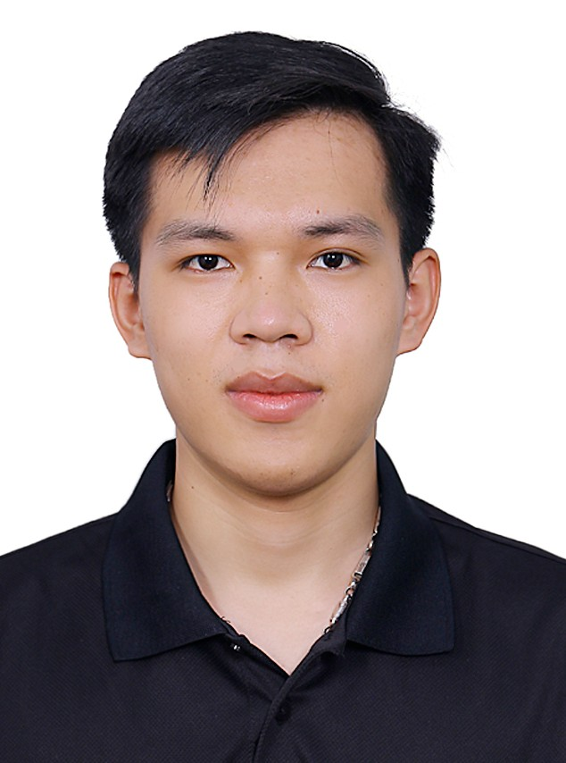

Tao Dang KhoaMaster's Student
267 Gajeong-ro, Yuseong-gu, Daejeon, 34113, Rep. of Korea |
 |


Biography
I graduated with a Bachelor’s degree in Mechatronics Engineering from Hanoi University of Science and Technology. I am currently pursuing a Master's degree in Science at the Korea University of Science and Technology. My research is centered on quantum circuit optimization using Deep Reinforcement Learning.
Experience
-
(KRISS) Korea Research Institute of Standards and Science, Yuseong-gu, Daejeon, S.KoreaSep. 2024 – present
Student Researcher
Advisor: Prof. Lee Changhyoup
Honors & Awards
| 3rd Place, IonQ Quantum Challenging , 2024 |
| Academic Excellence Scholarship, 2023 |
| Academic Excellence Scholarship, 2022 |
| Corporate Excellence Scholarship, Nhat Minh Company Limited, 2022 |
| Corporate Excellence Scholarship, Daizo tec Co., LTD, 2022 |
| Academic Excellence Scholarship, 2021 |
| Academic Excellence Scholarship, 2020 |
| Corporate Excellence Scholarship, Nhat Minh Company Limited, 2020 |
Selected Publications [Google Scholar]
2025
Dang Khoa Tao.
Quantum Computing, 2025.
2024
Vu, Danh Tien, Dang Khoa Tao, Nhu Thanh Nguyen, Cuc Thi Kim Nguyen, and Binh Xuan Cao.
Physica Scripta, 2024.
Dang Khoa Tao, Thi Phuong Anh Nguyen, Duc Duong Nguyen, Manh Toan Bui, Thi Kim Cuc Nguyen, and Xuan Binh Cao.
Available at SSRN, 2024.
Nguyen, Duc Duong, Vu Yen Nhi Thai, Dang Khoa Tao,Thi Phuong Anh Nguyen, Xuan Binh Cao, and Cuc Nguyen Thi Kim.
Acta Polytechnica Hungarica, 2024.